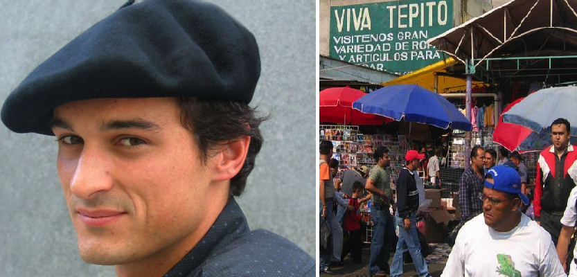

Consulta sobre Tren Maya será en Facebook para que no se repitan los votos
"La consulta será el 24 y 25 de noviembre, y la construcción empezará los primeros días de diciembre, y será por Facebook para que los enviados de la mafia del poder no voten doble"
Parece ser que el polémico sketch que grabó EPN junto al youtuber de la política se trataba tan sólo de una preparación para su futura carrera como standupero. "Siempre quise hacer Stand Up profesionalmente, ya que me parece todo un reto para este género del entretenimiento. La comedia política sólo fue un calentamiento".
"Yo también ya soy parte de esta nueva transformación y es por eso que ya me estoy preparando para mis próximas presentaciones como standupero, que seguro harán que nos olvidemos de Sofía Niño de la Santísima Trinidad y sus amigos", exclamó el actual esposo de la Gaviota.
Cada especial saldrá en cada año del sexenio de Andrés Manuel López Obrador, con su respectiva gira por toda la República. "A partir del cuarto intentaremos llegarle a más público de Latinoamérica", comentó el presidente más guapo de México.
Los nombres de los 6 especiales serán: "Tres Libros y un Presidente", "Infrestructochor, el Regreso", "The Party in the White House", "La Nueva Venezuela", "Vivos nos Queremos" y "Mi Corazón no es Perfecto pero sé amar".
"Mi especialidad es el humor negro, aunque también me desempeñó muy bien con el humor blanco, el verde y el rosa", señaló Quique Nieto. "Creo que la comedia a través de sus distintas formas puede lograr una verdadera transformación en los mexicanos".
Según Angélica Rivera, en uno de los especiales se contará con la participación del Bronco, pero no se ha dicho en cuál pues no quieren arruinar la sorpresa para los amantes de la buena comedia en el país.
"Seguramente esta nueva versión del Lord Peña Nieto será más amigable y amada por todos, hasta por los ayotzinapos", manifestó el Bronco cuando no quiso dar más declaraciones al respecto.
Marvel demandará a artesanos mexicanos por macetas de Groot que andan circulando
Después de que artesanos en México comenzaran a comercializar macetas del personaje más querido de los Guardianes de la Galaxia, Groot, la compañía de superhéroes más grande del mundo ha decidido levantarles una demanda.
Desde que despidieron a James Gunn, Marvel se ha mostrado con un carácter más fuerte y menos tolerante con respecto a los valores de la empresa. "Las macetas de Groot son una falta de respeto para el trabajo de grandes celebridades como Stan Lee", comentaron tras hacer pública su denuncia.
"No le estamos haciendo daño nadie, de hecho yo ni he visto la película de los Guardianes porque todo el mundo dice que es la peor de Marvel", mencionó un artesano mexicano que comenzaba a generar buenos ingresos con las macetas.
"Pensábamos que estarían más agradecidos, pues les estamos haciendo publicidad gratis", concluyó.
Por su parte, Groot ha dicho al respeto: "Yo soy Groot, soy Groot, yo soy Groot, yo soy Groot, soy Groot". Traducción: "A mí no me molestaría esta situación si los artesanos mexicanos me dieran un porcentaje de sus ganancias, yo sólo quiero dinero y divertirme".
"Estos mexicanos de ahora no respetan nada y lamento mucho decirlo pero Donald Trump tenía razón", comentó Stan Lee, quien también anunció una película sobre él mismo que en realidad será un gran cameo de dos horas seguidas.
Chilangos aseguran que los españoles hablan muy feo el castellano

'Chale, no les entiendo nadita, marchante', se quejó un tepiqueño
Fidencio Malhablado, comerciante de Tepito, que vive cerca de la en Taxqueña, pero nació en Texcoco y que tiene familiares en Chalco, criticó la forma en cómo los españoles hablan nuestro idioma.
"P’os hablan rete vaciado, ese", expresó con una ligera tonadita arrastrada.
Los españoles que llegan a la capital mexicana para adquirir en Tepito productos de alta calidad y preciosa manufactura, están siendo criticados debido a su forma de hablar por los habitantes chilangos.
"Chale, mano, como que dicen bien gacha la 'ese', ¿'eda'?", agregó don Fidencio quien tiene un negocio tecnológico de venta de películas clonadas con derechos de autor.
Estas críticas que no constituyen un acto de xenofobia ya que las personas criticadas son blanquitas, sí ha causado malestar de los turistas hispanos, quienes ya están meditando irse mejor a Vallarta donde prácticamente ya no quedan habitantes mexicanos.
Algunos españoles con baja autoestima ya están considerando modificar su acento para adoptar el tono y forma de hablar de los chilangos que tan elegante se vería en ciudades como Sevilla, Madrid o Bilbao, y que puede camuflarse con el castellano hablado con una cascara en la boca, conocido como 'catalán'.
Hombre se cambiará de género para salir del buró de crédito
Patricio Venaderos, moroso acreedor de varias tiendas departamentales, ha decidido aprovechar las leyes que algunos estados han expedido para cambiarse de género y nombre, y poder así volver a empezar con su historial crediticio.
Patricio, quien desde hoy es 'Patricia', no sólo meditará participar en los concursos de belleza de su estado, sino que se sentirá liberado toda vez que sus deudas han sido borradas por gracia del siglo XXI, y ahora, quiere volver a empezar.
"Antes de saturar mi historial crediticio, voy a sacar una casita con FOVISSSTE, porque luego si debo ya no me prestan", aseguró Paty mientras solicitaba la tarjeta de Costco.
"Yo siento que Paty merece tener muchas cosas. Sólo es cosa que los bancos me aprueben mis tarjetitas y uno que otro préstamo que solicité por ahí", agregó la persona renacida legalmente.
Aunque la ley no lo especifica, se cree que Paty podrá cambiar de nombre y género tantas veces como ella lo desee, lo que abre la posibilidad de que en el futuro realice el viaje que siempre soñó por Islandia e Inglaterra a cosa de las bienhechoras instituciones de crédito.
Miles de cerdos mexicanos emigran a Honduras al enterarse que ahí los alimentan con frijoles y tortillas
Una manada enorme de ganado porcino se dirige desde nuestro país hacia Honduras, luego de enterarse de la calidad de vida que tienen sus hermanos chanchos en las tierras catrachas.
"Aquí nos dan pan duro y sobras, allá tortillitas con frijoles, oing" comentó toda emocionada Peppe la cerdita.
La puerca peregrinación está encabezada por cerdos de renombre como Porky, quien había decidido jubilarse en nuestro país, y Hampton, quien vivía en la granja de Garfield en el Bajío, y quienes hartos de comer sólo pedacería y sobras de comida, probarán suerte en el país centroamericano.
Se pudo ver a los marranos cruzar la frontera con Guatemala todos presurosas de la emoción de llegar a San Pedro Sula, donde según se rumora, hay un paraíso de enfrijoladas y frijoles de la olla esperándolos.